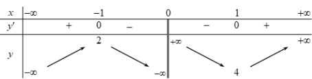
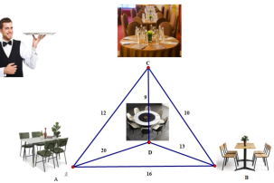
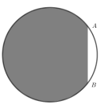

ĐỀ THI TOÁN - ĐỀ SỐ 30 HOT
Phần I: Trắc Nghiệm Nhiều Lựa Chọn
Tóm tắt kiến thức: Nguyên hàm
Nguyên hàm của \( f(x) = x^n \) là \( \frac{x^{n+1}}{n+1} + C \) (nếu \( n \neq -1 \)), và \( \int \frac{1}{x^n} \, dx = -\frac{1}{(n-1)x^{n-1}} + C \).
Câu 1:
Tìm nguyên hàm của hàm số \( f(x) = x^2 + \frac{2}{x^2} \).
Chọn đáp án:
Lời giải:
Ta có: \( \int \left( x^2 + \frac{2}{x^2} \right) \, dx = \int x^2 \, dx + \int \frac{2}{x^2} \, dx = \frac{x^3}{3} + 2 \cdot \left( -\frac{1}{x} \right) + C = \frac{x^3}{3} - \frac{2}{x} + C \).
Đáp án: A.
Tóm tắt kiến thức: Thể tích khối tròn xoay
Thể tích khối tròn xoay quanh trục \( Ox \): \( V = \pi \int_a^b [f(x)]^2 \, dx \).
Câu 2:
Cho hình phẳng \( (H) \) giới hạn bởi các đường \( y = x^2 + 3 \), \( y = 0 \), \( x = 0 \), \( x = 2 \). Gọi \( V \) là thể tích của khối tròn xoay được tạo thành khi quay \( (H) \) xung quanh trục \( Ox \). Mệnh đề nào dưới đây đúng?
Chọn đáp án:
Lời giải:
Thể tích khối tròn xoay quanh trục \( Ox \): \( V = \pi \int_0^2 (x^2 + 3)^2 \, dx \).
Đáp án: A.
Tóm tắt kiến thức: Phương sai
Phương sai mẫu: \( S^2 = \frac{1}{n} \sum f_i x_i^2 - \bar{x}^2 \), với \( \bar{x} \) là trung bình mẫu.
Câu 3:
Mỗi ngày bác Hương đều đi bộ để rèn luyện sức khỏe. Quãng đường đi bộ mỗi ngày của bác Hương trong 20 ngày được thống kê lại ở bảng sau:
| Quãng đường (km) | \([2.7; 3.0)\) | \([3.0; 3.3)\) | \([3.3; 3.6)\) | \([3.6; 3.9)\) | \([3.9; 4.2)\) |
|---|---|---|---|---|---|
| Số ngày | 3 | 6 | 5 | 4 | 2 |
Phương sai của mẫu số liệu ghép nhóm là
Chọn đáp án:
Lời giải:
Số mẫu: \( n = 20 \).
Giá trị đại diện: \( [2.85, 3.15, 3.45, 3.75, 4.05] \).
Trung bình: \( \bar{x} = \frac{2.85 \cdot 3 + 3.15 \cdot 6 + 3.45 \cdot 5 + 3.75 \cdot 4 + 4.05 \cdot 2}{20} = 3.39 \).
Phương sai: \( S^2 = \frac{1}{20} \left( 2.85^2 \cdot 3 + 3.15^2 \cdot 6 + 3.45^2 \cdot 5 + 3.75^2 \cdot 4 + 4.05^2 \cdot 2 \right) - 3.39^2 \approx 0.13 \).
Đáp án: C.
Tóm tắt kiến thức: Vector chỉ phương
Vector chỉ phương của đường thẳng đi qua hai điểm là hiệu tọa độ của chúng.
Câu 4:
Trong không gian với hệ tọa độ \( Oxyz \), cho điểm \( M(1; 2; 0) \). Gọi \( M_1 \), \( M_2 \) lần lượt là hình chiếu của \( M \) lên các trục \( Ox \), \( Oy \). Vector nào dưới đây là một vector chỉ phương của đường thẳng \( M_1 M_2 \)?
Chọn đáp án:
Lời giải:
Hình chiếu \( M_1 \) lên \( Ox \): \( M_1(1; 0; 0) \).
Hình chiếu \( M_2 \) lên \( Oy \): \( M_2(0; 2; 0) \).
Vector chỉ phương: \( \overrightarrow{M_1 M_2} = (0 - 1; 2 - 0; 0 - 0) = (-1; 2; 0) \).
Đáp án: C.
Tóm tắt kiến thức: Tiệm cận ngang
Tiệm cận ngang: \( \lim_{x \to \pm \infty} f(x) = k \).
Câu 5:
Đường tiệm cận ngang của đồ thị hàm số \( y = 1 + \frac{2x + 1}{x + 2} \) có phương trình là
Chọn đáp án:
Lời giải:
\( \lim_{x \to \pm \infty} y = \lim_{x \to \pm \infty} \left( 1 + \frac{2x + 1}{x + 2} \right) = 1 + 2 = 3 \).
Tiệm cận ngang: \( y = 3 \).
Đáp án: B.
Tóm tắt kiến thức: Tập xác định
Hàm số \( y = \sqrt{f(x)} \) xác định khi \( f(x) \geq 0 \).
Câu 6:
Tìm tập xác định \( D \) của hàm số \( y = \sqrt{16 - 2^{2x + 1}} \).
Chọn đáp án:
Lời giải:
Hàm số xác định khi: \( 16 - 2^{2x + 1} \geq 0 \Leftrightarrow 2^{2x + 1} \leq 16 \Leftrightarrow 2x + 1 \leq 4 \Leftrightarrow x \leq \frac{3}{2} \).
Tập xác định: \( D = \left( -\infty; \frac{3}{2} \right] \).
Đáp án: C.
Tóm tắt kiến thức: Phương trình mặt phẳng
Mặt phẳng song song với mặt phẳng \( Oxy \) có dạng \( z = k \), với \( Oxy \) có dạng \( y = 0 \).
Câu 7:
Trong không gian \( Oxyz \), mặt phẳng đi qua tâm của mặt cầu \( (x - 1)^2 + (y + 2)^2 + z^2 = 12 \) và song song với mặt phẳng \( (Oxz) \) có phương trình là
Chọn đáp án:
Lời giải:
Mặt cầu có tâm \( I(1; -2; 0) \).
Mặt phẳng song song với \( (Oxz) \) (tức \( y = 0 \)) có dạng \( y + D = 0 \).
Qua \( I(1; -2; 0) \): \( -2 + D = 0 \Rightarrow D = 2 \).
Phương trình: \( y + 2 = 0 \).
Đáp án: C.
Tóm tắt kiến thức: Hình học không gian
Mặt phẳng vuông góc với mặt phẳng khác nếu chứa đường thẳng vuông góc với mặt phẳng đó.
Câu 8:
Cho hình chóp \( S.ABC \) có đáy \( ABC \) là tam giác vuông tại \( A \), cạnh bên \( SA \perp (ABC) \). Gọi \( I \) là trung điểm cạnh \( AC \), \( H \) là hình chiếu của \( I \) trên \( SC \). Khẳng định nào sau đây đúng?
Chọn đáp án:
Lời giải:
Vì \( SA \perp (ABC) \) và \( ABC \) vuông tại \( A \), nên \( SA \perp AB \).
Do \( AB \subset (SAB) \) và \( SA \subset (SAC) \), nên \( (SAC) \perp (SAB) \).
Đáp án: B.
Tóm tắt kiến thức: Phương trình mũ
Phương trình \( a^{f(x)} = b \) giải bằng cách đưa về cùng cơ số hoặc đặt ẩn phụ.
Câu 9:
Tích tất cả các nghiệm của phương trình \( 3^{x^2 + x} = 9 \) bằng
Chọn đáp án:
Lời giải:
\( 3^{x^2 + x} = 9 = 3^2 \Rightarrow x^2 + x = 2 \Rightarrow x^2 + x - 2 = 0 \Rightarrow x = 1 \) hoặc \( x = -2 \).
Tích các nghiệm: \( 1 \cdot (-2) = -2 \).
Đáp án: C.
Tóm tắt kiến thức: Cấp số nhân lùi vô hạn
Tổng cấp số nhân lùi vô hạn: \( S = \frac{u_1}{1 - q} \), với \( |q| < 1 \).
Câu 10:
Tính tổng \( S \) của cấp số nhân lùi vô hạn có số hạng đầu \( u_1 = 1 \) và công bội \( q = -\frac{1}{2} \).
Chọn đáp án:
Lời giải:
Tổng: \( S = \frac{u_1}{1 - q} = \frac{1}{1 - \left(-\frac{1}{2}\right)} = \frac{1}{1 + \frac{1}{2}} = \frac{2}{3} \).
Đáp án: B.
Tóm tắt kiến thức: Vector trong hình chóp
Tính chất vector trong hình bình hành: \( \overrightarrow{AC} = \overrightarrow{AB} + \overrightarrow{AD} \).
Câu 11:
Cho hình chóp \( S.ABCD \) có đáy \( ABCD \) là hình bình hành. Khẳng định nào sau đây đúng?
Chọn đáp án:
Lời giải:
Trong hình bình hành \( ABCD \): \( \overrightarrow{BA} + \overrightarrow{DC} = \overrightarrow{0} \).
Xét: \( \overrightarrow{SB} + \overrightarrow{BA} + \overrightarrow{SD} + \overrightarrow{DC} = \overrightarrow{SB} + \overrightarrow{SD} \).
Do đó: \( \overrightarrow{SA} + \overrightarrow{SC} = \overrightarrow{SB} + \overrightarrow{SD} \).
Đáp án: A.
Tóm tắt kiến thức: Tính nghịch biến
Hàm số nghịch biến trên khoảng mà \( f'(x) \leq 0 \).
Câu 12:
Cho hàm số \( y = f(x) \) có bảng biến thiên như sau:

Hàm số nghịch biến trong khoảng nào?
Chọn đáp án:
Lời giải:
Từ bảng biến thiên, hàm số nghịch biến trong khoảng \( (0; 1) \) (nơi \( f'(x) < 0 \)).
Đáp án: B.
Phần II: Trắc Nghiệm Đúng/Sai
Tóm tắt kiến thức: Hàm phân thức
Tập xác định, tính đơn điệu, tiệm cận xiên, và các hệ số của hàm phân thức.
Câu 13:
Cho hàm số \( y = \frac{ax^2 + bx - 1}{x - 1} \) có đồ thị như hình vẽ bên dưới.

Xét các phát biểu sau:
Chọn đáp án cho từng phát biểu:
a)
b)
c)
d)
Lời giải:
a) Đúng. Hàm số không xác định tại \( x = 1 \), nên \( D = \mathbb{R} \setminus \{1\} \).
b) Sai. Đồ thị đi xuống trên \( (2; +\infty) \), nên hàm số nghịch biến.
c) Đúng. Tiệm cận xiên: \( y = ax + (a + b) \). Từ đồ thị, \( y = -x \), nên \( a = -1 \), \( a + b = 0 \).
d) Sai. Từ \( a = -1 \), \( b = 1 \), ta có \( b - 7a^2 = 1 - 7(-1)^2 = 1 - 7 = -6 \neq 6 \).
Đáp án: a) Đúng, b) Sai, c) Đúng, d) Sai.
Tóm tắt kiến thức: Chuyển động
Quãng đường: \( S = \int v(t) \, dt \). Vận tốc sau gia tốc: \( v(t) = \int a(t) \, dt + C \).
Câu 14:
Một chiếc ô tô bắt đầu chuyển động nhanh dần đều với vận tốc \( v_1(t) = 5t + 4 \, (\text{m/s}) \). Đi được 6 giây, người lái xe phát hiện chướng ngại vật và phanh gấp, ô tô tiếp tục chuyển động chậm dần đều với gia tốc \( a = -34 \, (\text{m/s}^2) \). Xét các phát biểu sau:
Chọn đáp án cho từng phát biểu:
a)
b)
c)
d)
Lời giải:
a) Đúng. \( v_2(t) = \int (-34) \, dt = -34t + C \). Tại \( t = 0 \), \( v_2(0) = v_1(6) = 5 \cdot 6 + 4 = 34 \), nên \( C = 34 \). Vậy \( v_2(t) = -34t + 34 \).
b) Đúng. \( S_1 = \int_0^6 (5t + 4) \, dt = \left[ \frac{5t^2}{2} + 4t \right]_0^6 = \frac{5 \cdot 36}{2} + 4 \cdot 6 = 90 + 24 = 114 \, \text{m} \).
c) Sai. Ô tô dừng khi \( v_2(t) = 0 \Rightarrow -34t + 34 = 0 \Rightarrow t = 1 \, \text{s} \). Quãng đường: \( S_2 = \int_0^1 (-34t + 34) \, dt = \left[ -17t^2 + 34t \right]_0^1 = -17 + 34 = 17 \, \text{m} \).
d) Đúng. Tổng quãng đường: \( S = S_1 + S_2 = 114 + 17 = 131 \, \text{m} \).
Đáp án: a) Đúng, b) Đúng, c) Sai, d) Đúng.
Tóm tắt kiến thức: Xác suất
Xác suất toàn phần: \( P(A) = P(A \cap B) + P(A \cap \bar{B}) \). Xác suất có điều kiện: \( P(A|B) = \frac{P(A \cap B)}{P(B)} \).
Câu 15:
Bảo hiểm nhân thọ là sản phẩm nhằm bảo vệ tài chính trước các rủi ro liên quan sức khỏe, thân thể và tính mạng. Anh An, nhân viên bán bảo hiểm, phỏng vấn ngẫu nhiên 200 khách hàng. Kết quả: 120 người trả lời “sẽ tìm hiểu”, trong đó 80% thực sự mua; 80 người trả lời “không tìm hiểu”, trong đó 20% thực sự mua. Gọi \( A \): “Người được phỏng vấn sẽ tìm hiểu”; \( B \): “Người được phỏng vấn thực sự mua”. Xét các phát biểu sau:
Chọn đáp án cho từng phát biểu:
a)
b)
c)
d)
Lời giải:
a) Sai. \( P(B) = \frac{80\% \cdot 120 + 20\% \cdot 80}{200} = \frac{96 + 16}{200} = \frac{112}{200} = 0.56 \), nên \( P(\bar{B}) = 1 - 0.56 = 0.44 \).
b) Sai. \( P(A|B) = \frac{P(A \cap B)}{P(B)} = \frac{80\% \cdot 120}{112} = \frac{96}{112} \approx 0.857 \neq 0.8 \).
c) Sai. \( P(A) = \frac{120}{200} = 0.6 \neq 0.62 \).
d) Sai. Số người thực sự mua: 112. Phần trăm trả lời “sẽ tìm hiểu”: \( \frac{80\% \cdot 120}{112} \cdot 100\% = \frac{96}{112} \cdot 100\% \approx 85.7\% \neq 71\% \).
Đáp án: a) Sai, b) Sai, c) Sai, d) Sai.
Tóm tắt kiến thức: Khoảng cách trong không gian
Khoảng cách từ điểm đến mặt phẳng: \( d = \frac{|ax_0 + by_0 + cz_0 + d|}{\sqrt{a^2 + b^2 + c^2}} \).
Câu 16:
Trong không gian với hệ tọa độ \( Oxyz \), cho mặt phẳng \( (P): x + 2y + z - 4 = 0 \) và điểm \( D(1; 0; 3) \). Mặt phẳng \( (Q) \) song song với mặt phẳng \( (P) \) và cách điểm \( D \) một khoảng bằng \( \sqrt{6} \). Các khẳng định sau đúng hay sai:
Chọn đáp án cho từng phát biểu:
a)
b)
c)
d)
Lời giải:
a) Đúng. \( d(D; (Oxy)) = |z_D| = |3| = 3 \).
b) Đúng. Thay \( D(1; 0; 3) \) vào \( (P) \): \( 1 + 2 \cdot 0 + 3 - 4 = 0 \), nên \( D \in (P) \), tức \( d(D; (P)) = 0 \).
c) Sai. \( (Q) \parallel (P) \): \( x + 2y + z + d = 0 \). Khoảng cách: \( \frac{|d + 4|}{\sqrt{6}} = \sqrt{6} \Rightarrow |d + 4| = 6 \Rightarrow d = 2 \) hoặc \( d = -10 \). Có hai mặt phẳng.
d) Sai. Mặt phẳng \( (ABC) \): \( \frac{x}{1} + \frac{y}{2} + \frac{z}{3} = 1 \Rightarrow 6x + 3y + 2z - 6 = 0 \). Khoảng cách từ \( D \) đến \( (ABC) \): \( d = \frac{|6 \cdot 1 + 3 \cdot 0 + 2 \cdot 3 - 6|}{\sqrt{6^2 + 3^2 + 2^2}} = \frac{6}{\sqrt{49}} = \frac{6}{7} \neq \frac{12}{7} \).
Đáp án: a) Đúng, b) Đúng, c) Sai, d) Sai.
Phần III: Trắc Nghiệm Trả Lời Ngắn
Tóm tắt kiến thức: Góc phẳng nhị diện
Góc phẳng nhị diện được xác định bởi góc giữa hai đường thẳng vuông góc với giao tuyến.
Câu 17:
Cho hình chóp \( S.ABCD \) có đáy là hình vuông cạnh \( 2a \), \( SC \perp (ABCD) \) và \( SC = 3a \). Tính góc phẳng nhị diện \( [B, SA, C] \)? (Kết quả làm tròn đến độ).
Nhập đáp án:
Lời giải:
Gọi \( O \) là tâm hình vuông. Vì \( SC \perp (ABCD) \), \( BO \perp SC \), \( BO \perp AC \), nên \( BO \perp (SAC) \).
Trong \( (SAC) \), gọi \( I \) là trung điểm \( AC \), \( OI \perp SA \). Góc phẳng nhị diện \( [B, SA, C] = \angle BIO \).
Tính: \( OI = \frac{OA \cdot SC}{SA} = \frac{\sqrt{2}a \cdot 3a}{\sqrt{(3a)^2 + (2\sqrt{2}a)^2}} = \frac{3\sqrt{34}}{17}a \).
Trong \( \triangle BIO \): \( \tan \angle BIO = \frac{BO}{OI} = \frac{a\sqrt{2}}{\frac{3\sqrt{34}}{17}a} = \frac{\sqrt{17}}{3} \Rightarrow \angle BIO \approx 54^\circ \).
Đáp án: 54.
Tóm tắt kiến thức: Chu trình Hamilton
Tìm chu trình Hamilton có tổng trọng số nhỏ nhất.
Câu 18:
Một nhân viên phục vụ bàn đang phục vụ trong một khu vực có 4 bàn đặt tại \( A, B, C, D \) với khoảng cách (tính theo đơn vị mét) được ghi như các trọng số của các cạnh trong hình bên.

Nhân viên xuất phát từ bàn \( A \), đi qua tất cả các bàn và quay về vị trí ban đầu, mỗi bàn chỉ được đi qua một lần (trừ lần trở về). Hỏi nhân viên đi như thế nào để quãng đường là ngắn nhất?
Nhập đáp án:
Lời giải:
Các cạnh: \( AB = 16 \), \( AC = 12 \), \( AD = 20 \), \( BD = 13 \), \( CD = 9 \), \( BC = 10 \).
Chu trình Hamilton:
- \( A \to C \to B \to D \to A \): \( 12 + 10 + 13 + 20 = 55 \).
- \( A \to C \to D \to B \to A \): \( 12 + 9 + 13 + 16 = 50 \).
- \( A \to B \to C \to D \to A \): \( 16 + 10 + 9 + 20 = 55 \).
- \( A \to B \to D \to C \to A \): \( 16 + 13 + 9 + 12 = 50 \).
Quãng đường ngắn nhất: 50 m.
Đáp án: 50.
Tóm tắt kiến thức: Tối ưu hóa
Tìm giá trị cực trị của hàm số bằng đạo hàm.
Câu 19:
Một con cá hồi bơi ngược dòng (từ nơi sinh sống) vượt khoảng cách 300 km để tới nơi sinh sản. Vận tốc dòng nước là 6 km/h. Giả sử vận tốc bơi của cá khi nước đứng yên là \( v \) km/h, năng lượng tiêu hao của cá trong \( t \) giờ theo công thức \( E(v) = c v^3 t \), với \( c \) là hằng số. Tính vận tốc bơi của cá khi nước đứng yên để năng lượng tiêu hao ít nhất?
Nhập đáp án:
Lời giải:
Vận tốc thực tế: \( v - 6 \). Thời gian: \( t = \frac{300}{v - 6} \).
Năng lượng: \( E(v) = c v^3 \cdot \frac{300}{v - 6} \). Đặt \( x = v - 6 \), \( v = x + 6 \).
Hàm số: \( f(x) = 300c \frac{(x + 6)^3}{x} = 300c \left( x^2 + 18x + 108 + \frac{216}{x} \right) \).
Đạo hàm: \( f'(x) = 300c \left( 2x + 18 - \frac{216}{x^2} \right) = 0 \Rightarrow 2x^3 + 18x^2 - 216 = 0 \Rightarrow x = 3 \).
Kiểm tra: \( f'(x) \) đổi dấu từ âm sang dương tại \( x = 3 \), nên \( f(x) \) đạt cực tiểu.
Vận tốc: \( v = x + 6 = 3 + 6 = 9 \, \text{km/h} \).
Đáp án: 9.
Tóm tắt kiến thức: Diện tích và tích phân
Diện tích vùng giới hạn bởi đồ thị: \( S = \int_a^b f(x) \, dx \).
Câu 20:
Một người có miếng tôn hình tròn bán kính 5 m. Người này sơn lên tấm tôn, mỗi mét vuông sơn tốn 100 nghìn đồng. Để treo tấm tôn, phần trung tâm không sơn (phần trắng như hình vẽ), trong đó \( AB = 6 \, \text{m} \).

Hỏi khi trang trí xong, người này tốn bao nhiêu tiền chi phí (đơn vị nghìn đồng)?
Nhập đáp án:
Lời giải:
Diện tích tấm tôn: \( S_1 = \pi \cdot 5^2 = 25\pi \, \text{m}^2 \).
Đường tròn: \( x^2 + y^2 = 25 \), nửa trên: \( y = \sqrt{25 - x^2} \).
\( AB = 6 \Rightarrow y_A = 3 \Rightarrow x_A = 4 \).
Diện tích không sơn: \( S_2 = 2 \int_0^4 \sqrt{25 - x^2} \, dx \).
Diện tích sơn: \( S = S_1 - S_2 = 25\pi - 2 \int_0^4 \sqrt{25 - x^2} \, dx \).
Chi phí: \( T = 100 \cdot S \approx 7445 \, \text{nghìn đồng} \).
Đáp án: 7445.
Tóm tắt kiến thức: Hình học không gian
Đường thẳng qua hai điểm thẳng hàng thỏa mãn tỉ lệ vector.
Câu 21:
Với hệ tọa độ \( Oxyz \), \( O \) nằm trên mặt nước, mặt phẳng \( (Oxy) \) là mặt nước, trục \( Oz \) hướng lên trên (đơn vị: mét). Một con chim bói cá ở vị trí cách mặt nước 2 m, cách mặt phẳng \( (Oxz) \), \( (Oyz) \) lần lượt 3 m và 1 m, phóng thẳng xuống vị trí con cá cách mặt nước 50 cm, cách mặt phẳng \( (Oxz) \), \( (Oyz) \) lần lượt 1 m và 1.5 m. Tọa độ điểm \( B \) lúc chim bói cá vừa tiếp xúc với mặt nước là \( (a; b; c) \). Tính biểu thức \( T = 5a + 10b + 15c \).
Nhập đáp án:
Lời giải:
Chim bói cá: \( C(1; 3; 2) \). Cá: \( A(1.5; 1; -0.5) \).
Điểm \( B \) trên mặt nước: \( z_B = 0 \), nên \( B(a; b; 0) \).
\( A, B, C \) thẳng hàng: \( \overrightarrow{CB} = k \overrightarrow{CA} \).
\( \overrightarrow{CA} = (0.5; -2; -2.5) \), \( \overrightarrow{CB} = (a - 1; b - 3; -2) \).
\( \left\{ \begin{array}{l} a - 1 = 0.5k \\ b - 3 = -2k \\ -2 = -2.5k \end{array} \right. \Rightarrow k = \frac{4}{5}, a = \frac{7}{5}, b = \frac{7}{5} \).
\( T = 5 \cdot \frac{7}{5} + 10 \cdot \frac{7}{5} + 15 \cdot 0 = 7 + 14 = 21 \).
Đáp án: 21.
Tóm tắt kiến thức: Xác suất toàn phần
\( P(B) = P(A) \cdot P(B|A) + P(\bar{A}) \cdot P(B|\bar{A}) \).
Câu 22:
Có hai chuồng thỏ. Chuồng \( X \) có 6 thỏ đen và 9 thỏ trắng. Chuồng \( Y \) có 8 thỏ đen và 4 thỏ trắng. Trước tiên, từ chuồng \( X \) bắt ngẫu nhiên 1 con thỏ rồi thả vào chuồng \( Y \). Sau đó, từ chuồng \( Y \) bắt ngẫu nhiên 1 con thỏ. Xác suất để con thỏ được bắt ra ở chuồng \( Y \) là thỏ trắng bằng bao nhiêu? (Kết quả làm tròn đến chữ số thập phân thứ hai).
Nhập đáp án:
Lời giải:
Gọi \( A \): Bắt thỏ trắng từ chuồng \( X \). \( B \): Bắt thỏ trắng từ chuồng \( Y \).
\( P(A) = \frac{9}{15} = \frac{3}{5} \), \( P(\bar{A}) = \frac{6}{15} = \frac{2}{5} \).
Nếu bắt thỏ trắng: Chuồng \( Y \) có 8 đen, 5 trắng. \( P(B|A) = \frac{5}{13} \).
Nếu bắt thỏ đen: Chuồng \( Y \) có 9 đen, 4 trắng. \( P(B|\bar{A}) = \frac{4}{13} \).
\( P(B) = \frac{3}{5} \cdot \frac{5}{13} + \frac{2}{5} \cdot \frac{4}{13} = \frac{15 + 8}{65} = \frac{23}{65} \approx 0.35 \).
Đáp án: 0.35.